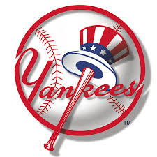
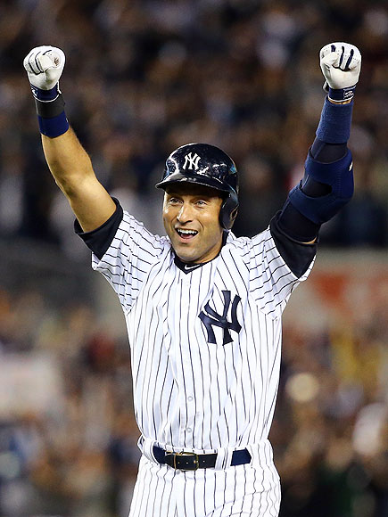
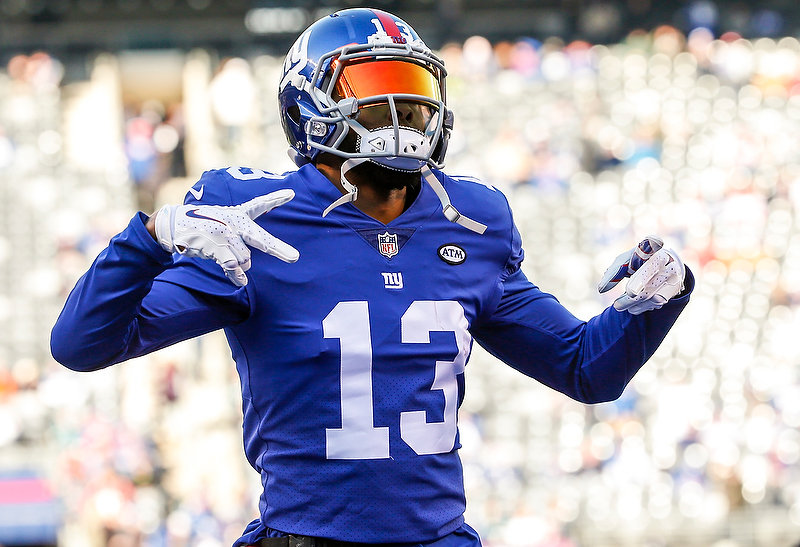
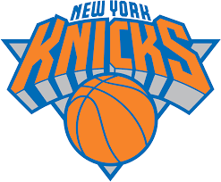
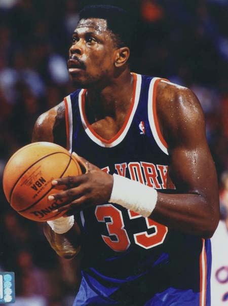

I was born in New York, and though I grew up in the South, New York and all the great things it has to offer has always been my home. From the incredible food and music, to the historic sports teams, to the shopping and incredible atmosphere the cities offer: there's no place I'd rather be than New York. My favorite part of the entire state is obviously the city that never sleeps: New York City. It has the best food you can find anywhere in the state, perhaps the most historic arena in basketball and entertainment history in Madison Square Garden, and some of the most interesting and unique people you'll find anywhere in the world.
| Team | # of Championships | Favorite Player |
|---|---|---|
| New York Yankees  | 27 | Derek Jeter  |
| New York Giants | 4 | Odell Beckham Jr. |
| New York Knicks | 2 | Patrick Ewing |
The food in New York is second to none. Below is a list of some of my favorite restaurants, shacks, food carts, etc. From an enormous tray of food on the side of the street, to a falafel shack, to some of the finest dining in the world: New York has it all. My favorite place to eat in New York is surprisingly a food cart dubbed "The Halal Guys". Located most famously on West 53rd Street in New York City, the food cart serves up HUGE, delicious plates of halal food served with rice, vegetables, and the two most incredible condiments in the world: white and red sauce. Another one of my favorite hidden gems is Mammon's Falafel located in Lower Manhattan. They make the best falafel sandwiches, served in warm pita pockets, that I have personally ever had: and I've tasted my fair share of falafels. I could go on forever about all my favorite eateries in New York, but it's better to just show a list and let you try them all for yourself!
I like to think of New York as the shopping capital of the world. With so many different people and cultures mixed together in one area, there's a store for everyone. I personally love New York's shopping scene because of my addiction to buying sneakers and because some of my favorite clothing brands are based out of and have stores located in New York. One of my favorite stores that I can never afford is called Flight Club, a sneaker resale outlet. They have all the most exclusive and rarest sneakers on the market, selling for multiple times the original price, of course. I also love the New York streetwear companies: Supreme, OnlyNY, Mighty Healthy, 10 Deep, etc. Perhaps my favorite store in the whole state, however, is the NBA Store. I love all the features and extras the store has to offer in addition to all the latest NBA gear and accessories. To sum it up, if I ever win the lottery, I'll be spending the first few weeks blowing most of it in New York.